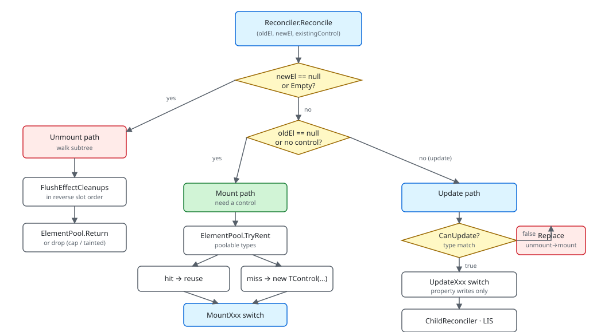

The reconciler is the only thing in Microsoft.UI.Reactor (Reactor) that writes to WinUI.
Every visual change you see on screen — a property update on a Button,
a new row in a list, a TabView item that just animated in — passes
through one method, Reconciler.Reconcile, that takes the previous
element record, the new element record, and the existing WinUI control
(if any), and decides among three outcomes: Mount a new control,
Update the existing one in place, or Unmount and return the control to
the pool. The whole rest of Reactor exists to make those three
decisions cheap: immutable element records that can be compared
field-for-field, a hook system that re-renders only the components
whose state actually changed, an element pool that recycles the heavy
WinUI classes, and a child-diff algorithm that handles list reorders
in close to the theoretical minimum number of moves. Read this page
before any of the others in the Under-the-hood track that mention
"the reconciler" — and read it once, end-to-end, before reaching
for a debugger when something rerenders incorrectly.
Reconciliation¶
This page absorbs the legacy docs/reference/reconciliation.md. The
goal is one place to learn how Reactor diffs trees — the same
information, in the structure the rest of the guide uses, plus the
source pointers that let you verify it.
Tri-state dispatch¶

| Inputs | Path | Outcome |
|---|---|---|
newEl is null or EmptyElement, existingControl exists |
Unmount | Unmount runs effect cleanups, returns control to pool |
oldEl is null/Empty, existingControl is null |
Mount | Mount rents from pool or allocates, populates, returns new control |
both elements present, CanUpdate(old, new) returns true |
Update | the matching handler patches changed properties only; child lists diff |
both present, CanUpdate false (type changed) |
Replace | Unmount then Mount; the new control replaces the old in the parent |
Every section below explains how one of those rows is implemented.
Reference props add one post-commit step to the table. .Ref(cell) sets
the cell to the mounted control and clears it on unmount; referrers such
as TeachingTip.Target, automation relationships, and XYFocus*
subscribe to those cells. During reconciliation, changed cells enqueue
their reference edges in a dirty set. After the tree commit finishes,
the reconciler flushes that set so every reference write observes the
final mounted/unmounted state. Referrer unmount and pool return tear
down their edge bag, so subscriptions do not leak.
Reconcile — the entry point¶
public UIElement? Reconcile(
Element? oldElement,
Element? newElement,
UIElement? existingControl,
Action requestRerender)
{
return (oldElement, newElement) switch
{
(null, not null) => Mount(newElement, requestRerender),
(not null, null) => UnmountAndReturnNull(existingControl),
(not null, not null) => Update(oldElement, newElement, existingControl!, requestRerender),
_ => null,
};
}
Reconcile is short on purpose. The interesting work is in Mount,
Update, and the child reconciler — this method just routes. The
ETW emit gate at the top is IsEnabled-guarded so the disabled path
costs a single read and branch. _reconcileTraceDepth makes sure
nested Reconcile calls during the same pass don't emit their own
start/stop events; only the top-level pass logs.
The reconciler holds debug counters (DebugElementsDiffed,
DebugElementsSkipped, DebugUIElementsCreated,
DebugUIElementsModified) reset at depth 0 and reported at the end of
the pass. The reconcile overlay in the dev menu
reads these.
Caveat: The reconciler returns the new
UIElementbecause Update can replace the control rather than patching it:CanUpdatemay return true for the type but the underlying WinUI control type may have changed at runtime (e.g. a custom-type registry update), and the reconciler then signals "replace me in your parent'sChildrencollection". If you callReconcilefrom a custom container and ignore the return value, the parent keeps pointing at a control that's about to be unmounted. The framework's ownChildReconcilerhandles this; custom callers need to mirror it.
Mount — building a control tree¶
public UIElement? Mount(Element element, Action requestRerender)
{
// Unwrap legacy ModifiedElement (backward compat)
ElementModifiers? modifiers = element.Modifiers;
if (element is ModifiedElement mod)
{
modifiers = mod.WrappedModifiers;
if (mod.Inner.Modifiers is not null)
modifiers = modifiers.Merge(mod.Inner.Modifiers);
element = mod.Inner;
}
Mount unwraps modifiers, enters the context/theme scopes, and then
resolves the element through four dispatch arms: per-host _v1Handlers,
per-host _typeRegistry, the global ControlRegistry, and finally a
small switch for composition primitives. Built-in and custom WinUI
controls such as Button, TextBlock, and stacks mount through their
registered ControlDescriptor or IElementHandler; those handlers rent
or allocate the control, apply initial properties, reconcile children
through their declared children strategy, wire event trampolines, and
return the control. The fallback switch in Reconciler.Mount.cs is only
for structural elements: components, function components, memo
components, error boundaries, transparent KeyedMemoElement wrappers,
and EmptyElement.
The reconciler maintains a context-value scope so children rendered
inside Mount see the same Context values their
parents pushed. Stagger scopes work the same way: a parent declaring
.WithStagger(delay) pushes an index that descendants' enter
transitions consume.
Mount also threads through the element pool. For
poolable types, the framework tries to rent a recycled control before
allocating — this is why long-running apps with lots of list churn
don't end up paying GC cost proportional to scroll velocity.
Update — patching in place¶
Update mirrors the Mount dispatch: per-host _v1Handlers,
per-host _typeRegistry, the global ControlRegistry, then the
composition-primitive fallback switch. Real WinUI controls are patched
by their registered descriptor or handler, which compares the old and
new element fields and writes only the changed properties onto the
existing control. Button.Content changed? The descriptor path updates
that DP. IsEnabled is the same? Its prop entry skips the write.
Modifiers like margin and corner-radius diff the same way, just against
the merged ElementModifiers records. The fallback switch only updates
structural wrappers such as components and error boundaries; an unchanged
KeyedMemoElement is transparent and returns null to keep the
existing control.
The early-skip optimization is in two places. At the element level,
Element.CanSkipUpdate(oldEl, newEl) returns true when the records
are structurally identical, are not theme-sensitive,
and have the same callback presence — the reconciler can avoid the
children.Get(i) COM call entirely and just refresh the
Tag if the element carries callbacks. At
the property level, the descriptor or handler short-circuits per
property: unchanged property → no DP write.
CanUpdate(old, new) is the type-shape check: the same Element record
type, the same control-target type. Returns true for (ButtonElement,
ButtonElement); false for (ButtonElement, ImageElement) — type
swap forces unmount + mount.
Child reconciler — keyed vs positional¶
internal static void Reconcile(
Element[] oldChildren,
Element[] newChildren,
IChildCollection children,
Reconciler reconciler,
Action requestRerender,
UIElement? parentControl = null)
{
// Filter out nulls and EmptyElements
var oldFiltered = Filter(oldChildren);
var newFiltered = Filter(newChildren);
bool hasKeys = HasAnyKeys(oldFiltered) || HasAnyKeys(newFiltered);
// Spec 042 §6 — read the active Animations.Animate ambient once
// per reconcile so insert / move / unmount paths can apply the
// same kind without re-reading AsyncLocal for every child. Stays
// null in the overwhelmingly common no-ambient case.
var ambient = AnimationAmbient.Current;
AnimationKind? ambientKind = ambient is { HasEffect: true } ? ambient.Kind : null;
if (hasKeys)
ReconcileKeyed(oldFiltered, newFiltered, children, reconciler, requestRerender, ambientKind);
else
ReconcilePositional(oldFiltered, newFiltered, children, reconciler, requestRerender, ambientKind, parentControl);
}
A panel's Children is just a list. Diffing two lists isn't free; the
naive O(n²) "compare every pair" loses badly on large lists. Reactor
picks one of two strategies based on whether any child carries a
Key.
Positional. No keys → match by index. Walk both lists in parallel, update the common prefix in place, mount any extra elements at the end, unmount any leftover children. Cost: O(max(old, new)). The catch is that an insert at the front re-updates every element rather than detecting the shift.
Keyed. Any child carries a key → run a four-phase algorithm:
- Strip the common prefix (children at the same index with the same key + same shape).
- Strip the common suffix.
- The middle is the only part that can have moved. If it's a pure insert (old middle empty) or pure remove (new middle empty), handle it directly.
- Otherwise, run Longest Increasing Subsequence over the new middle's positions in the old middle. Elements in the LIS don't move; everything else does. This is the minimum number of moves for the given assignment.
The keyed path is what makes ForEach(items, item => Card(item).WithKey(item.Id))
behave correctly when a row is inserted at the top of a hundred-row
list: one mount at index 0, no moves elsewhere — versus a hundred
property writes in the positional path.
Identity and Key¶
Element.Key is the identity primitive. Two elements with the same
key at different positions are treated as the same element by the
keyed child reconciler; two elements with different keys at the same
position are treated as different elements (force unmount + mount).
Without a key, identity follows position.
Use keys when:
- The list can reorder (sort, drag-reorder).
- Items can be inserted or removed in the middle.
- An item carries identity beyond its visual position (selection state in a controlled-input pattern, focus, an in-flight async load).
Don't use the array index as a key when the list can reorder — that
defeats the entire point. The REACTOR_DSL_001
analyzer flags missing keys in ForEach and similar APIs.
Tag-based event dispatch¶
The reconciler wires WinUI events (Click, Tapped, TextChanged,
…) once at mount time. The handler doesn't capture the element's
callback directly — it would go stale after every re-render. Instead,
the reconciler stamps the current element onto the control via a
ReactorAttached dependency property (the "tag"), and the handler
reads the current element from sender.Tag and invokes whatever
callback is stored on the latest element.
// Mount: wire once
button.Click += (sender, _) =>
{
var el = Reconciler.GetElementTag<ButtonElement>(sender);
el?.OnClick?.Invoke();
};
// Update: refresh the tag
Reconciler.SetElementTag(button, newElement);
This is why Element.HasCallbacks is load-bearing in the early-skip
path of the child reconciler
— the skip short-circuits Update, so the tag has to be refreshed
explicitly or the trampoline keeps dispatching through the previous
render's closure (stale-state bug).
Gap nodes¶
Some WinUI controls hold children in collections that aren't the
familiar Panel.Children:
- TabView —
TabItems - NavigationView —
MenuItemsplusContent - TreeView —
RootNodeswith nestedChildren - MenuBar / CommandBar —
Items/PrimaryCommands/SecondaryCommands
The child reconciler walks Panel.Children-shaped containers
uniformly. Gap nodes are handled imperatively by their mount/update handlers —
the framework knows which collection to walk for each control type and
runs a second-pass diff over it.
Patterns¶
Stable identity through state changes¶
A keyed list whose items carry per-row state (selection, expansion, in-flight load) needs the key to stay stable across re-renders. The typical mistake is to derive the key from a value that can change:
// Stable: row identity persists across edits
ForEach(rows, row => Card(row).WithKey(row.Id))
// Unstable: changing the title changes the key, remounts the card,
// loses any state attached via UseState inside Card
ForEach(rows, row => Card(row).WithKey(row.Title))
The reconciler isn't psychic. When the key changes, it unmounts the old element and mounts a new one — the per-row state, focus, and animations restart from scratch. Use an immutable identifier.
public abstract record Element
{
/// <summary>
/// Optional key for stable identity across re-renders (like React's key prop).
/// When set, the reconciler uses it to match elements across list reorderings.
/// </summary>
public string? Key { get; init; }
/// <summary>
/// Layout modifiers (margin, padding, size, alignment, etc.) applied to this element.
/// Set via fluent extension methods: Text("hi").Margin(10).Width(200)
/// Modifiers are stored inline so the concrete element type is preserved through chaining.
/// </summary>
public ElementModifiers? Modifiers { get; init; }
Custom container reconciliation¶
When you write a control that owns children (a custom panel, a
third-party container Reactor doesn't wrap), the integration point is
RegisterType + a custom ReconcileChildren callback. The
Architecture Overview source-map row
"Reconciler" lists the partial files where the type registry lives;
the third-party-controls test fixtures
(tests/Reactor.AppTests.ThirdPartyControls/) are the canonical
worked example.
Common Mistakes¶
Using array index as a key¶
internal static void Reconcile(
Element[] oldChildren,
Element[] newChildren,
IChildCollection children,
Reconciler reconciler,
Action requestRerender,
UIElement? parentControl = null)
{
// Filter out nulls and EmptyElements
var oldFiltered = Filter(oldChildren);
var newFiltered = Filter(newChildren);
bool hasKeys = HasAnyKeys(oldFiltered) || HasAnyKeys(newFiltered);
// Spec 042 §6 — read the active Animations.Animate ambient once
// per reconcile so insert / move / unmount paths can apply the
// same kind without re-reading AsyncLocal for every child. Stays
// null in the overwhelmingly common no-ambient case.
var ambient = AnimationAmbient.Current;
AnimationKind? ambientKind = ambient is { HasEffect: true } ? ambient.Kind : null;
if (hasKeys)
ReconcileKeyed(oldFiltered, newFiltered, children, reconciler, requestRerender, ambientKind);
else
ReconcilePositional(oldFiltered, newFiltered, children, reconciler, requestRerender, ambientKind, parentControl);
}
An index-based key matches positions across renders, which is exactly what the unkeyed path already does. Worse, it positively asserts to the reconciler that "this element at index 3 is the same element as the previous render's index 3", so when an item is inserted at the front, every keyed child shifts, every key mismatches its previous position, and the keyed-path's LIS algorithm produces a worst-case move list. Use the item's own identifier (database ID, GUID, content hash) or skip the key and let positional matching handle it.
Tips¶
Read Reconciler.cs as a routing function, not as the algorithm.
The interesting code is in Reconciler.Mount.cs,
Reconciler.Update.cs, and ChildReconciler.cs. The orchestration
file is short; the per-type handlers are where the patching logic
lives.
Keys aren't free — but they're cheap. Add a key whenever you can predict that the list will reorder or items will be inserted. Don't bother for static or append-only lists; positional matching is optimal there.
CanSkipUpdate lives on Element. When you add a new element
type with callbacks, override HasCallbacks so the early-skip path
refreshes the tag. Forgetting this is the most common
fresh-element-type bug; the symptom is "the handler sees stale state".
Reconciler overlays the truth. When something rerenders that shouldn't, enable the reconcile-highlight overlay (dev-tooling) — it draws a border around every control the reconciler touched on the last pass. If your "unchanged" component lights up, the element-record comparison is finding a difference somewhere; the overlay narrows the search to one row.
Next Steps¶
- Reactivity Model — Previous: what brings the reconciler a new tree.
- Hooks Internals — Where the state that drove this reconcile lives.
- Element Pool — Next: how Mount and Unmount talk to the pool.
- Effects Scheduling — What runs after the reconciler commits.
- Architecture Overview — The full render-loop picture.